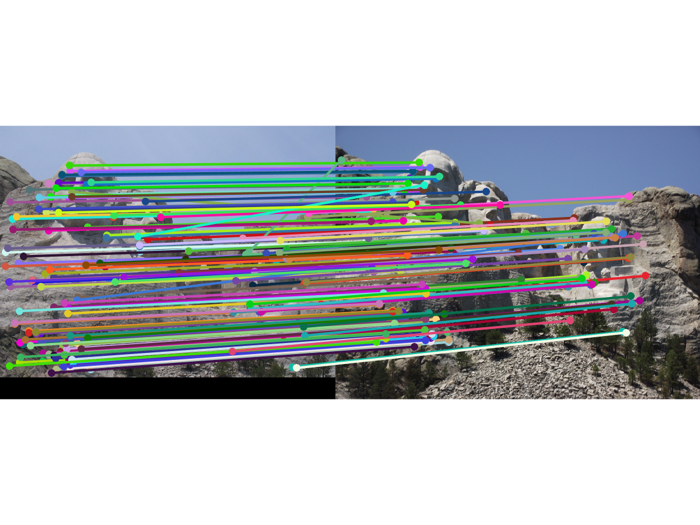

Example of features detected on a house.
For this project I was given the task of developing the three parts of a feature detection pipeline: finding interest points (edges), figuring out what features are important, and then matching those features to features found in an image of the same object. I found this project challenge because of my general lack of knowledge of the features available in Matlab. But once I discovered the debugging tools, work progressed much faster.
Implementing the harris corner detector turned out to be the easiest part of the assignment. Once I discovered the imgradient function I was able to calculate Ix and Iy correctly. My algorithm was picking up points on the edges of the images, so I added some simple suppression of all the edges out to the feature_width mark. This suppression is simple in the sense that it simply ignores anything close to the edge of the image (by setting it to 0). Finding maximum values in the neighborhood turned out to be fairly simple with the use of the colfilt function which allowed me to automatically find the maximum value in a sliding 5x5 array.
Getting the features was extremely difficult. I had trouble figuring out how the SIFT algorithm was supposed to work. Once I figured out how to properly calculate the gradient angles, I was able to get something reasonablly close. I did end up implementing the normalize, clamp, renormalize pattern just to see how it would affect my results.
Matching features was easy once I figured out how to calculate the distances properly. The repmat function was very helpful for this part of the problem.
I ended up using a lot of loops (especially in get_features.m). This seems to result in a very slow algorithm. Even when working with the example data set (where I only found around 100 features) it took several minutes to calculate.
Overall my algorithm seems to perform fairly well. It has an ok good matches to bad matches ratio. However, it completely failed on the difficult example data (most likely because of the large difference in contrast and color between the two images). I'd be interested to see how I could tune my algorithm to fix that.
|
79 Good Matches. 7 Bad Matches |
|

153 Good Matches. 10 Bad Matches |
|
Fail! |
|
Looking good |